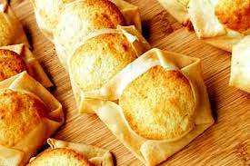

Ecuadorian Quesadillas

Description
Quesadillas are sweet, flavorful snacks that are traditional in the city
of Quito, the capital of Ecuador. This Creole delight is usually accompanied
with ice cream or the famous salpicones (natural fruit juices with shaved ice).
Ingredients
- 1 egg
- 1 teaspoon butter
- 1 cup of what flour
- Half teaspoon of salt dissolved in 2 tablespoons of water
- 4 egg yolks
- 1 cup grated cheese
- 1 cup of powdered sugar
- 1 tablespoon constatch
Instructions
- Preheat oven to 350 F (180 C). In a bowl, beat the egg vigorously, add the melted
butter and then gradually add the water with the salt. Knead until you achieve a
smooth and homogeneous dough, let it rest.
- To prepare the filling, lightly beat the yolks with the sugar until melted, then
add the cornstarch and when the preparation is very fluffy add the cheese.
- Roll out the dough as thin as possible and cut into 10 pieces. Place 2 tablespoons
of the filling in the center and fold the edges, making sure that the filling is exposed.
- Place the quesadillas in the oven and wait until they are golden. Remove from the
oven and let cool for 2 hours. Serve with a naranjilla salpicón, ice cream or tea.